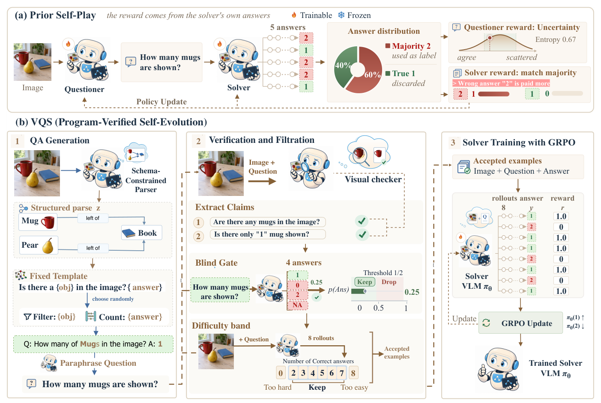
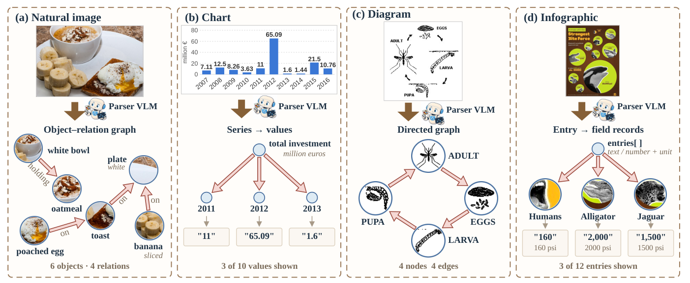
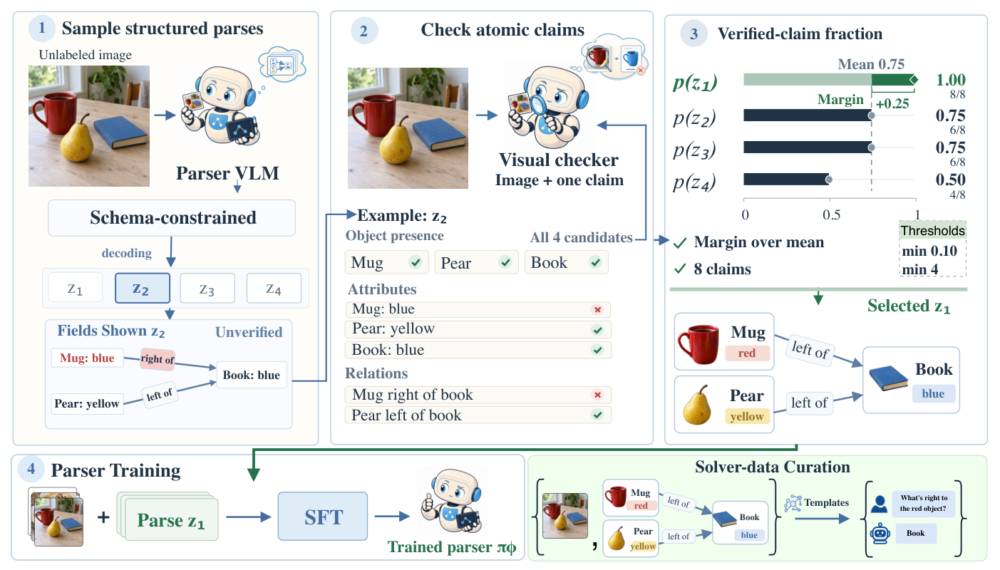
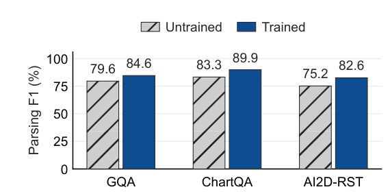
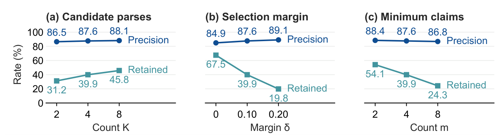
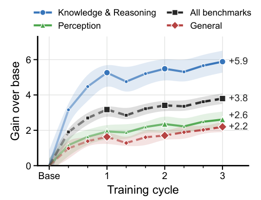
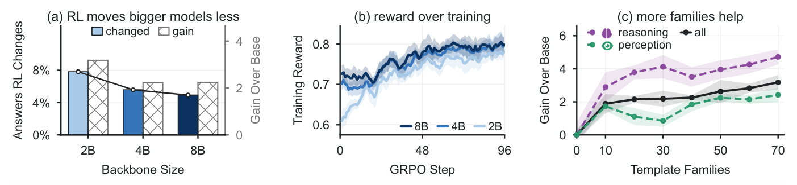

Self-evolving vision-language models train on questions they generate from unlabeled images. Since these questions have no gold answers, prior methods label them by majority vote over sampled answers or by a model judge. In a human evaluation, we find that 24% of majority-vote labels and 18% of model-judge labels produced during self-evolution are wrong. To address this problem, we present Verifiable QA Generation for Self-Evolving Models (VQS), which changes how the model judges answers. Instead of voting on an answer, the model parses each image into a structured record, such as a scene graph, a chart table, or a diagram graph. Fixed programs then write a question from the record and compute its answer. The model still acts as a visual checker, but it only confirms the individual facts the program reads, one short claim at a time. These claim-level checks select the parser's training targets, so the parser also improves without labels. Human raters find 94% of VQS answers correct, against 76% for majority voting. Across ten benchmarks, VQS improves Qwen3-VL by up to 3.18 points at the 2B, 4B, and 8B scales and outperforms the strongest self-evolving baseline at each. Gains keep growing over three training rounds, reaching 3.84 points at 2B.
Without gold answers, prior self-evolving methods take their label from the solver's own outputs. When most samples are wrong, the wrong answer becomes the label and is reinforced. VQS computes the answer with a program over a checked parse instead.

One set of weights plays every role: parser, paraphraser, checker, blind gate and solver. No human question, answer or label is used at any stage.
The model turns each image into a record under a per-domain JSON schema that the decoder enforces.
70 template families read the record and return a question, its computed answer and its hop count.
Every claim behind the answer is confirmed against the image; a blind gate and a difficulty band filter the rest.
GRPO with reward 0.9 × exact match + 0.1 × format, in a curriculum ordered by hop count.

The parser samples K = 4 parses per image. Each is scored by the fraction of its claims the checker confirms, and the best becomes an SFT target only if it beats the mean of the four by δ = 0.10 and asserts at least m = 4 claims.

Ten benchmarks, three Qwen3-VL scales, five self-evolving baselines. VQS gives the largest average gain at every scale and improves all ten benchmarks at each.
InfoVQA = InfographicsVQA, SQA = ScienceQA, MMB = MMBench, ESB = EmbSpatial, LogicV = LogicVista. Small numbers are changes against the backbone's own base; underlined values are the best trained model per column.
Human raters checked 500 shared questions, 125 per visual domain. Accuracy among retained questions; VQS keeps 76.0% of questions, majority vote 92.0%, the model judge 90.8%.
| Parser target | Parse prec. | Answer acc. | Solver acc. |
|---|---|---|---|
| Untrained | 80.8 | 86.8 | 58.0 |
| Random parse | 82.1 | 91.0 | 61.5 |
| Whole-parse check | 85.0 | 94.0 | 62.0 |
| Per-claim check (VQS) | 87.6 | 96.1 | 62.4 |
Precision and answer accuracy rated by hand on 150 samples; solver accuracy is the 10-benchmark average of a 2B solver trained on each parser's questions.



| Pipeline (2B) | Solver acc. | Parser prec. |
|---|---|---|
| Untrained parser | 58.0 | 80.8 |
| Full VQS | 62.4 | 87.6 |
| without constrained decoding | 61.9 | 85.3 |
| without fact-checker | 60.9 | 87.6 |
| without blind gate | 61.8 | 87.6 |
| without difficulty band | 62.1 | 87.6 |
| Question design (2B) | Setting | Solver acc. |
|---|---|---|
| Family difficulty | Easy / Middle / Hard | 60.8 / 62.4 / 61.1 |
| Generator | Fixed templates / written programs | 62.4 / 61.4 |
| Curriculum | Shuffled / global / within-family | 61.3 / 61.7 / 62.4 |
| Difficulty band | Initial / refreshed | 62.4 / 62.3 |

VQS improves all ten benchmarks for every family: +1.77 on Gemma3-12B-It, +1.51 on InternVL3-8B-Instruct and +1.84 on Llama-3.2-11B-Vision-Instruct.
@misc{heakl2026vqs,
title = {Program-Verified Self-Evolution for Vision-Language Models},
author = {Heakl, Ahmed and Choi, Sungik and Lee, Moontae and Khan, Salman},
year = {2026},
url = {https://github.com/ahmedheakl/VQS}
}